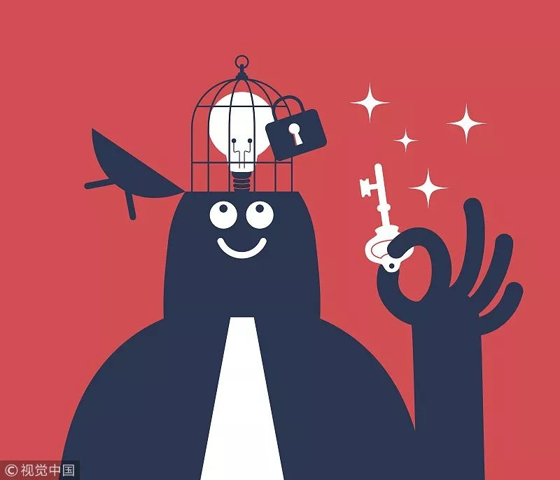

点击上方"程序人生"选择置顶公众号
第一时间关注程序员身边的故事

方法第三方士大夫发斯蒂芬斯蒂芬对方水电费水电费第三方士大夫水电费第三方第三方士大夫对方水电费水电费水电费发顺丰的时代的发生的菲尔特瑞特瑞特让他法第三方士大夫士大夫都是
做事建议
1.项目任务事情很多事，一件件解决当你因为项目任务多的感觉按时完不成，烦躁到一件也不想做的时候，或者是因为一件比较难的事情你觉得完成不了而导致了其他事情也不想做的时候。就记住这句话，如果是第一个原因，你就别想那么多，不管事情多不多，一件件来做，如果你什么都不做停在那里的话，不但没有进度，可能还会造成恶性循环。如果是第二个原因的话就跳过难的地方，做能做的，不然因为一件事没有进度就说不过去了。
2 任务有计划，到周到日，工作松紧有度这样不至于加班，也不至于太闲。工作的效率，即真正工作的有效时间要提高。不要拖延任务，不然容易形成恶性循环。排计划的目的是战胜惰性，充分利用白天的工作时间。心里需要知道当天要做哪些事情，并把它做完，不然看看微信，聊聊天，不知不觉一天的时间就这样过去了。你所拥有的最宝贵的东西就是你的时间，因为你不能创造更多时间。
3 随时记 随地记 及时记生活里的想法、点子，稍纵即逝。所以为了避免忘记，可以随时记录到手机里。不要小看这个习惯，以后可能会有大作用。还有就是平常你花了很长时间解决了一个难题或者错误的时候，记住一定要把它记下来，不论当时有多忙，哪怕记几个关键字都行。其一因为这是你的劳动成果，其二是你不知道下次会不会还会碰到类似的问题。做个备忘，下次就不用做重复的工作了。还有一种情况是，开完一些会议，比如需求对接会后 ，会后应该立即把它整理记下来，别想明天再搞，因为你明天说不定就忘记了。
- THE END -
7条评论
写评论
{{item.content}}
{{item.createtime}} #7楼- 点赞25
- 评论32
- 收藏